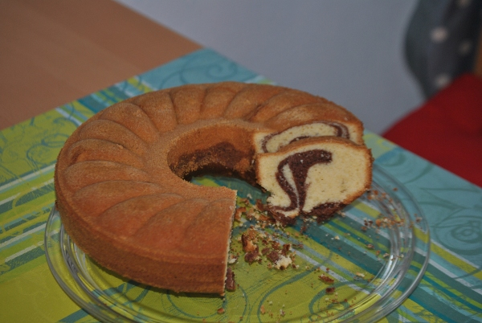

Schneller Marmorkuchen

- Vorbereitung: ca. 5 Minuten
- Backzeit: ca. 60 Minuten
Zutaten
- 400 g Mehl
- 375 g Zucker
- 1 Pck. Vanillinzucker
- 1 Pck. Backpulver
- 5 Eier
- 250 g Butter
- 1 Tasse lauwarmes Wasser
- Kakaopulver
Zubereitung
- Alle Zutaten bis auf den Kakao in eine Rührschüssel geben und 5 Minuten mit dem
Handrührgerät rühren. Die Hälfte des Teiges in eine gebutterte und gemehlte Springform
geben.
- Den restlichen Teig mit Kakao, Menge nach Belieben, verrühren und auf den anderen Teig geben. Mit einer Gabel Muster ziehen.
- Bei 180° Celsius Ober-/Unterhitze ca. 1 Stunde backen.